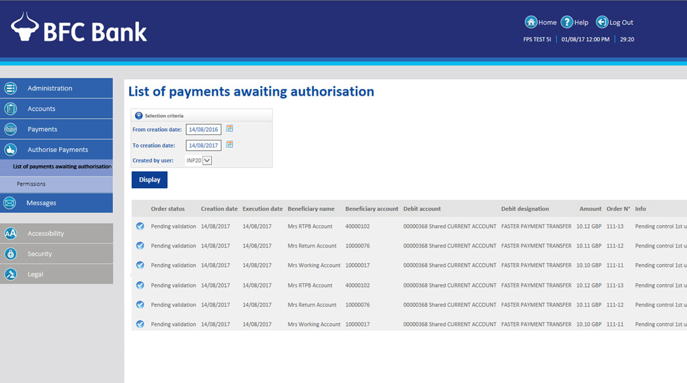

From the Authorise Payments menu, you can view a list of payments waiting to be authorised. It allows you to authorise, refuse or cancel payments.

You can view a list of permissions and set the status of each. You can also edit permissions, and see a record of changes that have been made, when and who made them.